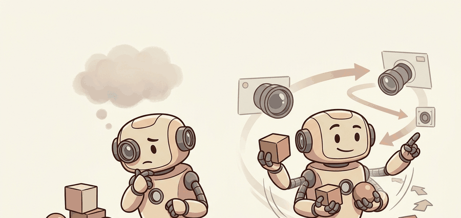

Section 27.1: Seeing to classify vs. seeing to act
"A class label is useful only after it changes the robot's next safe action."

Figure 27.1A: The useful question is not what the camera can name; it is which action becomes safe enough to execute.
A Patient Embodied AI Agent
Big Picture
Seeing to classify vs. seeing to act separates image labels from action-relevant state. A class label says what a pixel region might contain; an action perception record says where that region is, how certain the estimate is, how fresh it is, and which robot commands are now admissible.
Problem First: Why This Representation Exists
In this section, classification is treated as a weak intermediate representation. A robot needs the class tied to pose, reachability, timing, confidence, and the action set, because the same label can imply grasp, avoid, inspect, or ignore depending on state.
The contract here maps image evidence to an action-conditioned state: label, frame, uncertainty, latency, and the consumer that uses it. That contract is the bridge from camera recognition to planner admissibility.
Action Is The Unit Of Meaning
A label earns embodiment when it changes a permitted action. If the policy issues the same command for cup, obstacle, and unknown object, the classifier is decoration rather than part of control.
Figure 27.1.1 should be read as a classifier-to-controller handoff: label, confidence, timestamp, frame, and permitted action are separate fields because an accurate label can still be useless for control.
Figure 27.1.1: From image recognition to action-conditioned state. The dashed feedback path reminds the reader that perception quality is judged by action consequences and replayable diagnostics.
Mathematical Core
The basic decision object is expected utility conditioned on visual evidence, not class probability alone.
The image $I_t$ matters only after calibration $K$, camera pose $T_{cw}$, latency $\Delta t$, and uncertainty $\Sigma_t$ make it usable by the action module. The safe action set filters out commands that violate collision, reach, or timing constraints before utility is maximized.
Classification-to-action conversion
Convert visual evidence into a calibrated state estimate with units and frame names.
Attach uncertainty and timestamp metadata before the estimate reaches the planner.
Filter actions by geometric and safety constraints.
Log the chosen action and a counterfactual action that would have been chosen without the visual estimate.
Classification Output Versus Action Output
Design Choice
Use When
Control Risk
Image class
Inventory, captioning, weak context
Can ignore pose, reachability, and latency.
Action state
Grasping, navigation, inspection, docking
Wrong frame or stale timestamp can make a correct label unsafe.
Counterfactual action
Evaluation and debugging
No counterfactual means no evidence that perception mattered.
Worked Miniature
Code Fragment 27.1.1 grounds the idea with three candidate actions. NumPy is enough here because the goal is to expose the action contract before a full vision stack hides it behind models.
# Rank robot actions from calibrated visual evidence.
# The visual confidence must combine with safety margin before execution.
import numpy as np
actions = np.array(["reach left", "reach center", "wait"])
class_confidence = np.array([0.92, 0.64, 1.00])
safety_margin_m = np.array([0.03, 0.14, 0.50])
task_value = np.array([0.95, 0.72, 0.20])
score = task_value * class_confidence + 0.8 * safety_margin_m
chosen = int(score.argmax())
print(actions[chosen])
print(np.round(score, 3))
reach center
[0.898 0.573 0.600]
Code Fragment 27.1.1: The code shows why the highest class confidence does not automatically win. The small `safety_margin_m` for `reach left` pushes the policy toward `reach center`, which is exactly the action-conditioned distinction this section teaches.
Library Shortcut
In production, OpenCV calibration, ROS 2 message timestamps, and a PyTorch perception head can produce this action record in a few calls. The library stack handles camera models, image transport, batching, and tensor execution, but the action schema should remain as inspectable as the NumPy baseline.
Failure Mode To Test
The common failure is celebrating a high-confidence class label while the robot executes an unsafe reach because the label was not tied to a metric safety margin.
Practical Example
A warehouse arm deciding between two bins should log the detected object, camera frame, transform into the robot base, safety margin to each bin lip, and the command that changed because of vision. That log lets the team distinguish a visual error from a controller clearance error.
Memory Hook
For Seeing to classify vs. seeing to act, the perception result must answer what action changed, what uncertainty changed, and what log would reproduce the decision. Otherwise the output is still visualization, not embodied evidence.
Debugging And Evaluation
Evaluate classification inside the policy loop: record image frame, predicted class, confidence, pose source, admissible actions, chosen action, and whether the class changed a rollout outcome.
Perturb labels with visually similar distractors, lighting shifts, and partial occlusions, then check whether the robot changes the action for the right semantic reason.
Research Frontier
Current visual foundation models are increasingly useful as feature providers, but embodied evaluation still hinges on whether those features improve closed-loop success under perturbations. The frontier is not only stronger recognition; it is recognition whose uncertainty, timing, and geometry are usable by action policies.
What's Next
Section 27.2 takes the action-conditioned label from this section and asks what happens when the classifier must also draw a precise boundary around the object, turning a class score into a pixel mask the robot can track.
Shows how visual perception becomes a real-time odometry source for navigation stacks.
Self Check
Can you name the representation, the consuming action, the uncertainty or freshness field, and the failure label for Seeing to classify vs. seeing to act? If any one is missing, the section is not yet ready for a robot replay log.
Key Takeaway
Seeing to act means optimizing an action under calibrated visual evidence, uncertainty, and safety constraints, not merely choosing the most likely class label.
Exercise 27.1.1
For a tabletop pick task, write two action candidates that a classifier alone would rank incorrectly. Add the missing frame, uncertainty, or safety-margin field that would fix the decision.